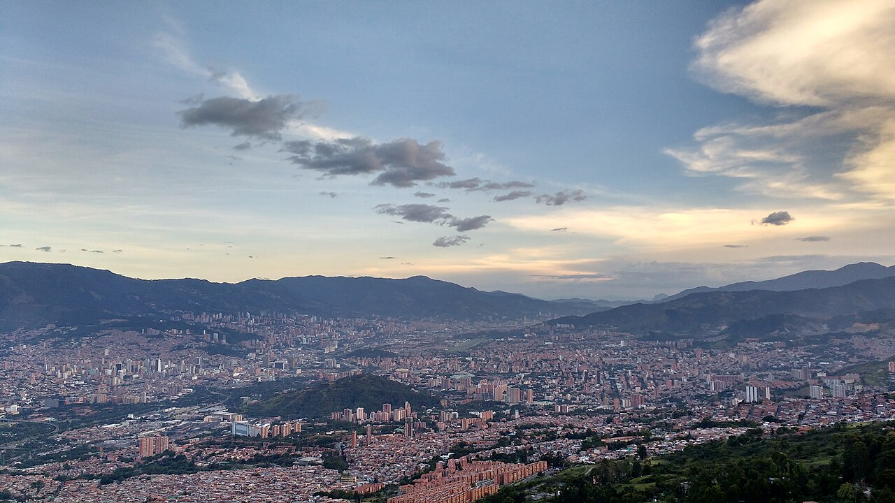
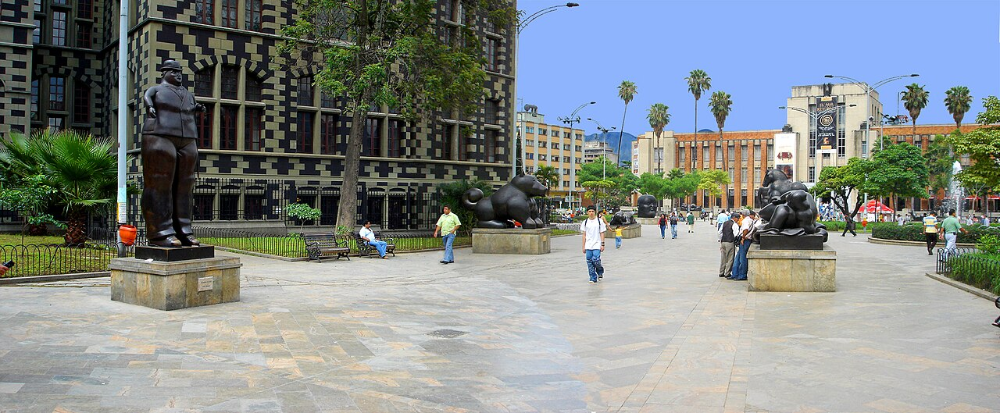
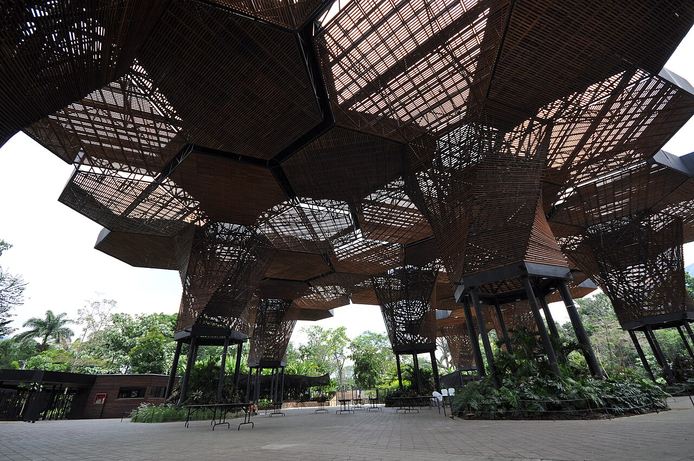
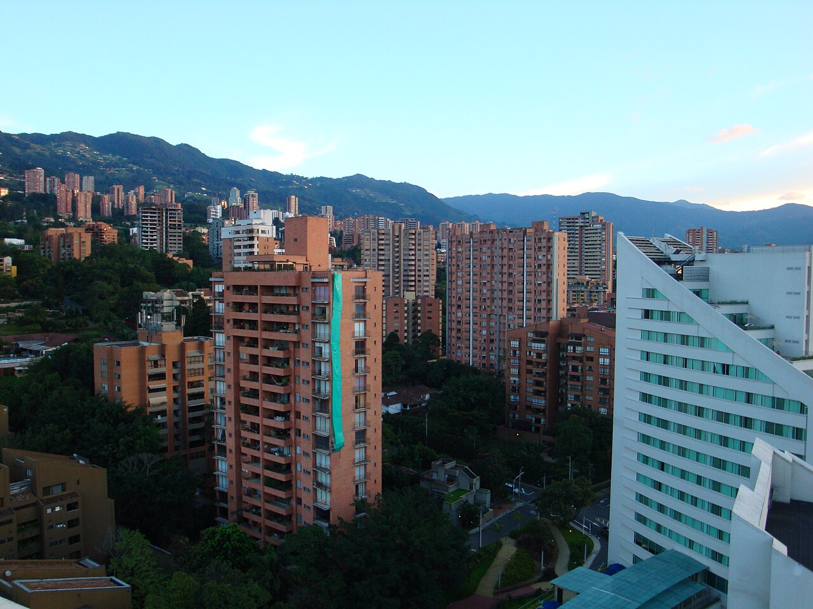

Botero Square
Sculptures and heritage in central Medellín.
Find on the map ↗Aburrá Valley · Antioquia, Colombia
Art, gardens, neighbourhoods, food and nightlife among mountains.
What to see ↗Discover its history ↓
Do you have a business in Medellín? Leave your details to take part ↗
Discover the destination
Trade and industry shaped Medellín into a major city in Antioquia. Today, cultural spaces, neighbourhoods and urban transport reveal different ways of living in the Aburrá valley.

Ideas for your visit
Choose the places that spark your curiosity and plan your route at your own pace.
Sculptures and heritage in central Medellín.
Find on the map ↗
02A space for discovering plant life in the city.
Find on the map ↗
03Explore an area with restaurants, shops and nightlife.
Find on the map ↗Images resized; framing may vary by screen. Photographs licensed under CC BY-SA retain that license.
Connect the parts of your trip
Find how to get around, where to stay and eat, things to do and the services you need. Explore at your own pace.
There are no places published in this directory yet.
Locate the places you want to visit and check their opening hours, entry conditions and accessibility before planning your route.
Find Medellín on the map ↗There are no upcoming events published.
Organising an event? Let’s talk ↗Join Explorando Lugares
Be part of it.
Whether you run a hotel, restaurant, bar or shop, provide transport or organise tours and activities, we would like to hear about your business.
Leave your contact details. We will get in touch to discuss featuring your business on the portal.
I want to take part ↗